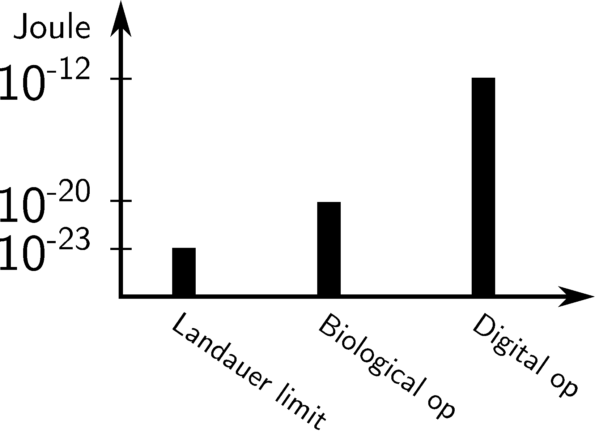
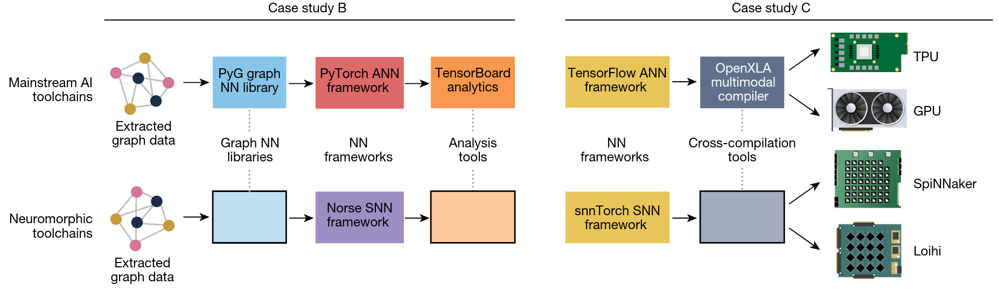
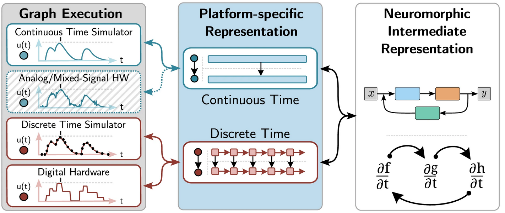

Beyond the von Neumann Wall
Building Open, Reproducible Neuromorphic Computing
Jens Egholm Pedersen
Chair, Open Neuromorphic Executive Committee
jeped@kth.se
jegp@mastodon.social
jepedersen.dk
Edge AI Milan 2025
The von Neumann Wall
The Fundamental Problem
Separation of memory and computation creates an insurmountable energy bottleneck
Energy Crisis in Computing

Source: mlsysbook.ai
The "AI memory wall"

Source: mlsysbook.ai
Result: Computational bottleneck
Neuromorphic Computing
Physics-Based Computation
Harness the natural dynamics of analog circuits to perform computation
The promise of biology
Source: Shankar 2022
The Promise of neuromorphics
Energy
1000×
improvement
Speed
100×
faster inference
Real-time
μs
response time
Not just incremental - transformational improvements
But there's a critical challenge...
The Fragmentation Problem
Model incompatibilities
New findings are platform-specific and do not generalize
Platform incompatibilities
Each neuromorphic chip has its own software stack
Today's Reality
- 🔒 Incompatible ecosystems: Intel, BrainChip, SynSense, BrainScaleS, Innatera, ...
- 🔄 No portability: Rewrite code for each platform
- 📊 No benchmarks: Can't compare performance
- 🚫 Limited research: Can't reproduce or build upon work
This kills innovation and adoption
Learning from History
"Mainstream deep learning success can also be attributed to the availability of powerful and relatively easy-to-use open software tools"
Source: Kudithipudi et al. 2025, Nature
Learning from History
Source: Kudithipudi et al. 2025
We need similarly efficient pipelines
Open Neuromorphic Initiative
Strategic Vision: Accelerate Open Science
... "the community should consolidate their efforts around the current crop of open-source tools to avoid further fragmentation"
Thriving Open Source Ecosystem
⚡ impact
Strong platforms
Millions of downloads
🌐 Community
2100+ members
Experts in the field
🧠 Strong Content
Top search rankings
Popular SW/HW lists
🎯 Focus
Fixing real problems
Mutually beneficial
Filling in the gaps
Source: Kudithipudi et al. 2025
Example: Neuromorphic Intermediate Representation (NIR)
- 🔗 Universal format
- 🔄 Write once, run anywhere
- 📊 Benchmark across platforms
- 🔬 Reproducible research
Practical Results
Real Performance Gains (preliminary)
- 3 orders of magnitude energy improvement demonstrated
- Microsecond inference times on edge devices
- Same model running on 14+ different platforms
- Reproducible benchmarks across hardware
The Open Advantage
- Faster Innovation: Build on existing work rather than reinventing
- Quality Assurance: Community review catches bugs early
- Talent Pipeline: Open tools attract and create skilled developers
- Risk Mitigation: No single point of failure or vendor control
Open = Accelerated
The Path Forward
Strategic Vision for Open Neuromorphic
Future Plans & Goals
- 🔬 Transparent Science: Make neuromorphic engineering shareable, testable, modifiable
- 🌐 Open Standards: Establish interoperability before commercial fragmentation
- 📚 Education & Accessibility: Lower barriers for newcomers to the field and stay attractive
- 🤝 Collaborative Development: Scientific software that evolves through community contribution
Timeline
2025
New strategic vision
-
Mature toolchains
2026
Broader adoption
-
Commercial deployments
2027+
Widespread ecosystem
-
Next-gen applications
Industry impact
Current shortcoming
- 💸 R&D costs spiraling - each platform needs custom development
- ⏰ Time-to-market delays - rebuilding from scratch for each chip
- 🎯 Talent shortage - scarcity of engineers who know neuromorphic
- 🔒 Immature hardware - early and unstable ecosystems
How ONM Solves Your Problems
📊 Reduce Development Costs
Write once, deploy everywhere
🚀 Accelerate Time-to-Market
Instant platform switching
👥 Build Talent Pipeline
Skilled pool of workers
🛡️ Mature ecosystem
Interoperability = safety
Real Industry Impact Today
🎯 Companies Already Benefiting
- Telecompanies: Routing and switching
- Defense: Robust and reliable calculations at the edge
- Healthcare: Fall detection, body sensing, cochlear implants
- Supply chain: Optimization problems and planning
Partnership Opportunities
🏢
Strategic Partnership
Shape focus and strategic vision
💼
Technical Collaboration
Co-develop tools and industry benchmarks
📚
Talent Development
University and research partnerships
Join the Movement
🌐 Open Neuromorphic
Be part of the open future of neuromorphic computing
contact@open-neuromorphic.org
Key Takeaways
- 🚧 von Neumann bottleneck limits traditional AI at the edge
- ⚡ Neuromorphic computing offers 1000× energy improvements
- 🔓 Open standards prevent vendor lock-in and accelerate innovation
- 🚀 The future is open - join the movement
Beyond the von Neumann Wall
Building Open, Reproducible Neuromorphic Computing
Jens Egholm Pedersen
Chair, Open Neuromorphic Executive Committee
jeped@kth.se
jegp@mastodon.social
jepedersen.dk
Edge AI Milan 2025